Project 3
3D Printing
The assignment for project 3 was to design a 3d model and than print it. I had 100 grams of material at my disposal so the object could not weigh more than that. I started off my using google and youtube to get some ideas see cool projects that others had designed. I decided to make an object, with the purpose of stopping wheels from moving. Below is a picture of the object.
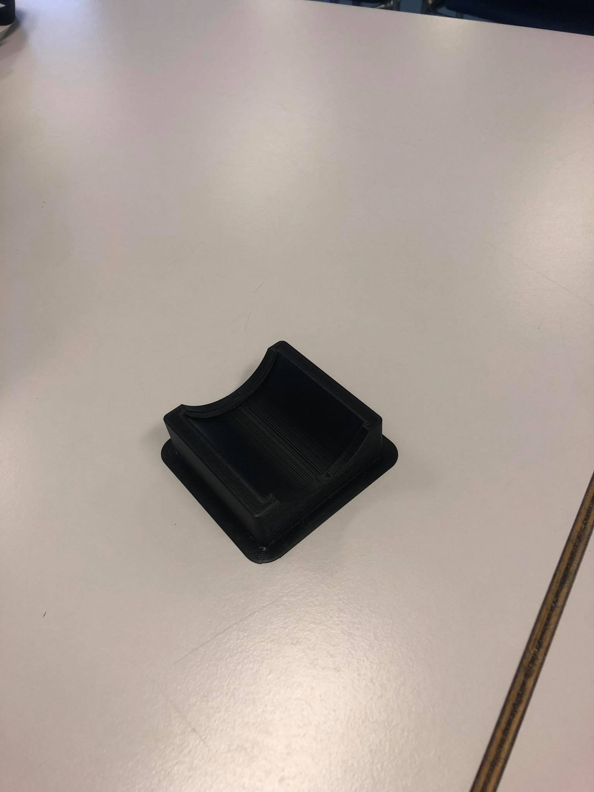
The first step in the design procces was to make a simple box, and cut parts out of it until the design is complete.
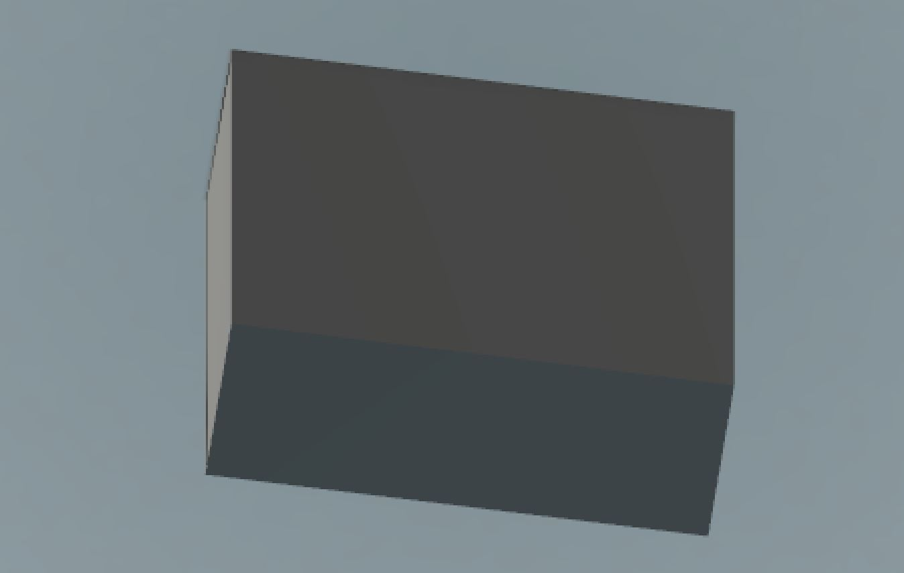
Now I drew a cirlce and used it to cut out some space
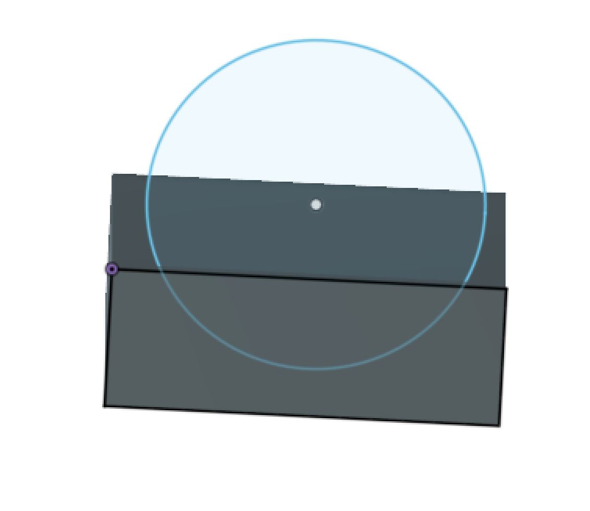
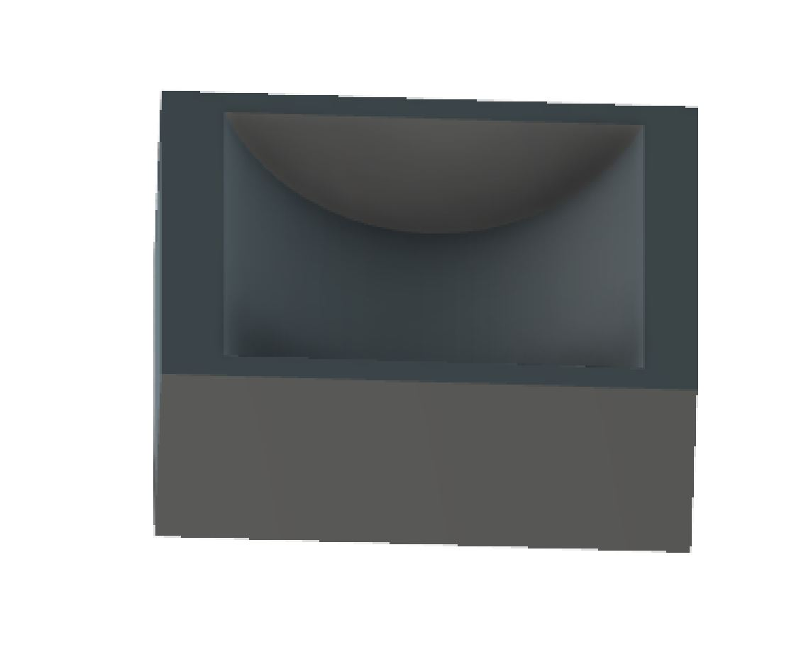
Than I made some fillets on the edges to make it look better.
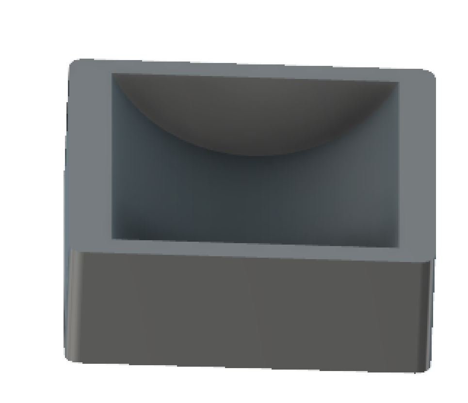
I addes some holes on the bottom of the object, to make space for non-slip rubber.
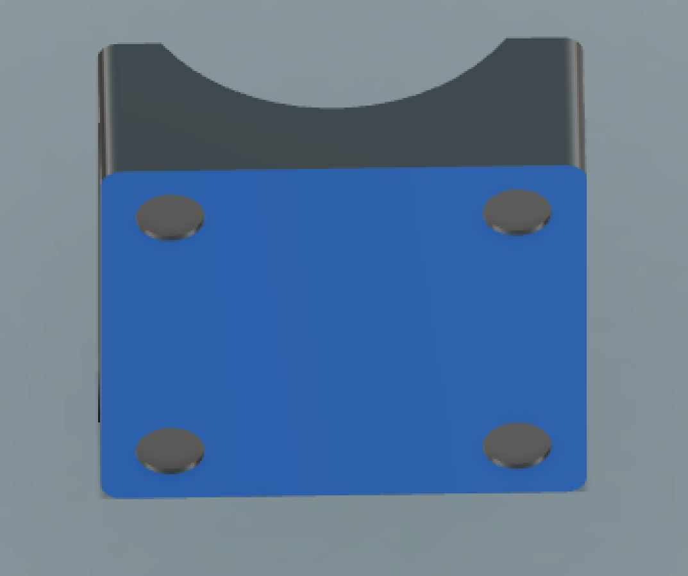
The next step was to cut some material out of the sides.
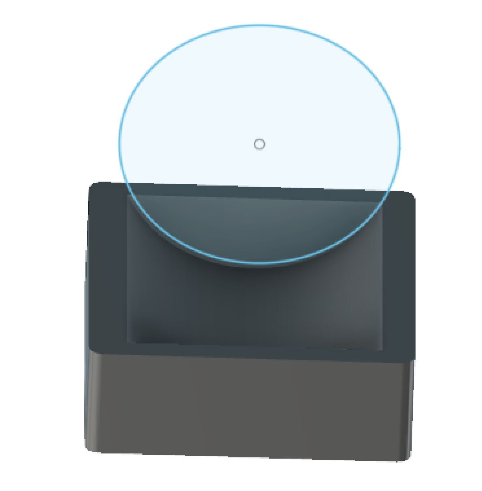
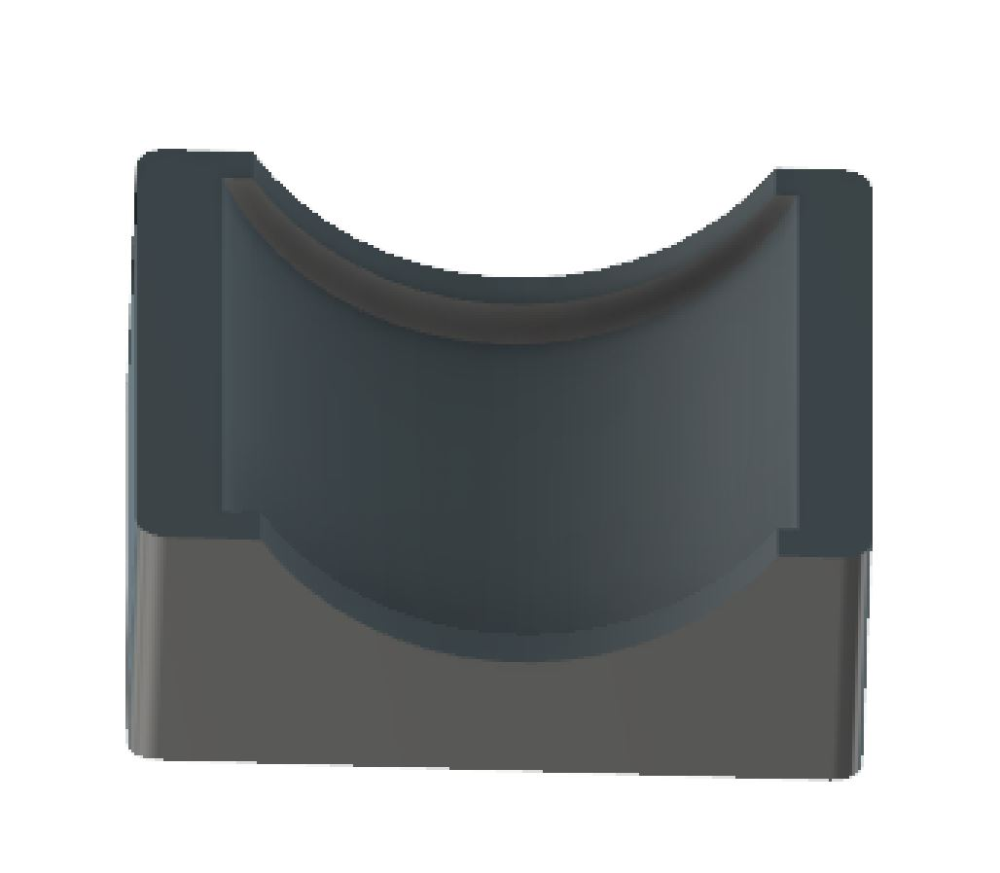
Below is a picture of the design when everything was ready.
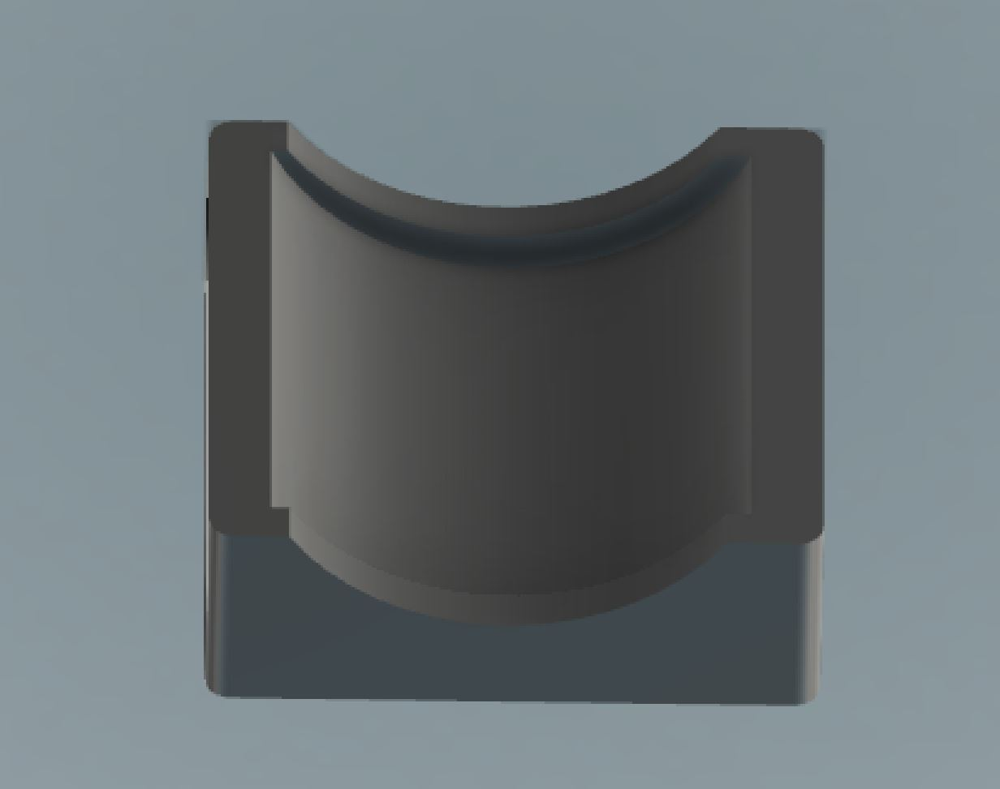
Now I had to export the file in a STL format, to ultimaker cura. In ultimaker cura I prepare the object for printing.
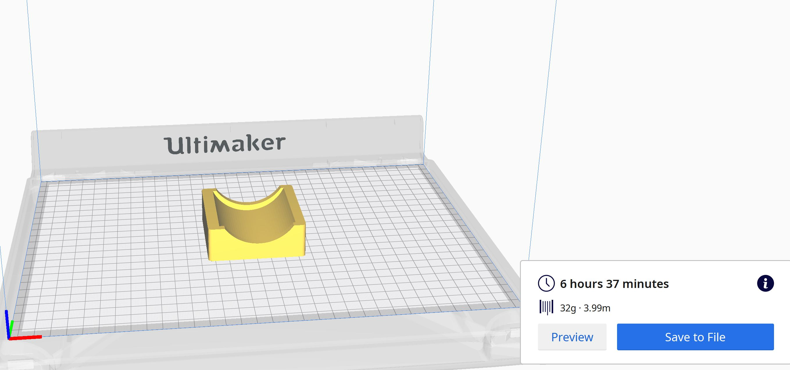
As shown in the phote above, the object weighs 32 grams and takes slighly more than 6 hours to print.
Pictures of the final outcome are below.
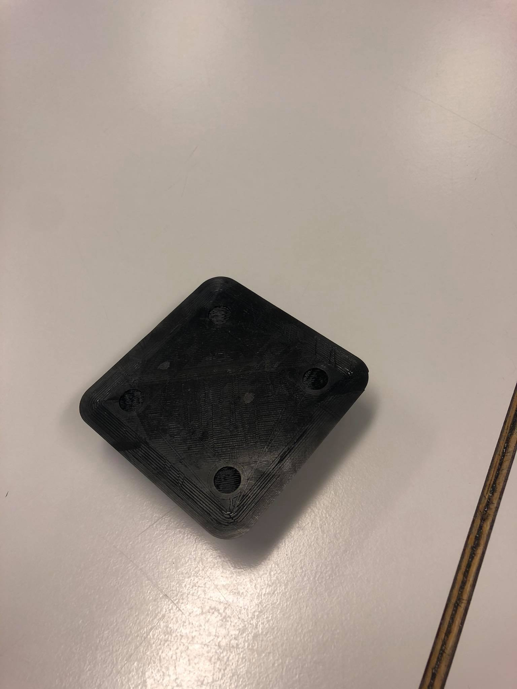
3D scanning
Another part of project 3 was to 3d scan an object. I downloaded an app "qlone" on my iphone which makes it very easy to 3d scan an object. It is neccesary to print a paper, that is provided in the app so the scanning works. Here is a picture of the paper.

First I tried to scan a Skyr, but it went pretty wrong.
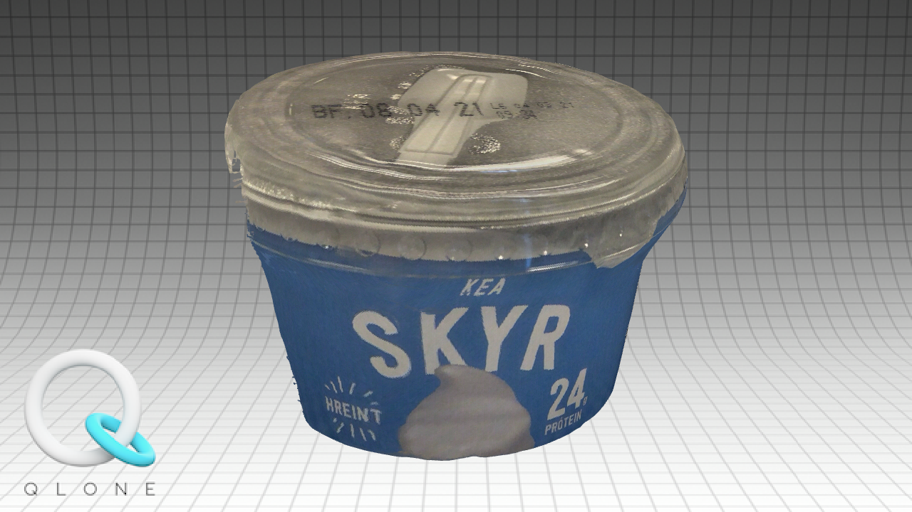

And than I scanned a loop and it was better, altough it wasn't perfect.
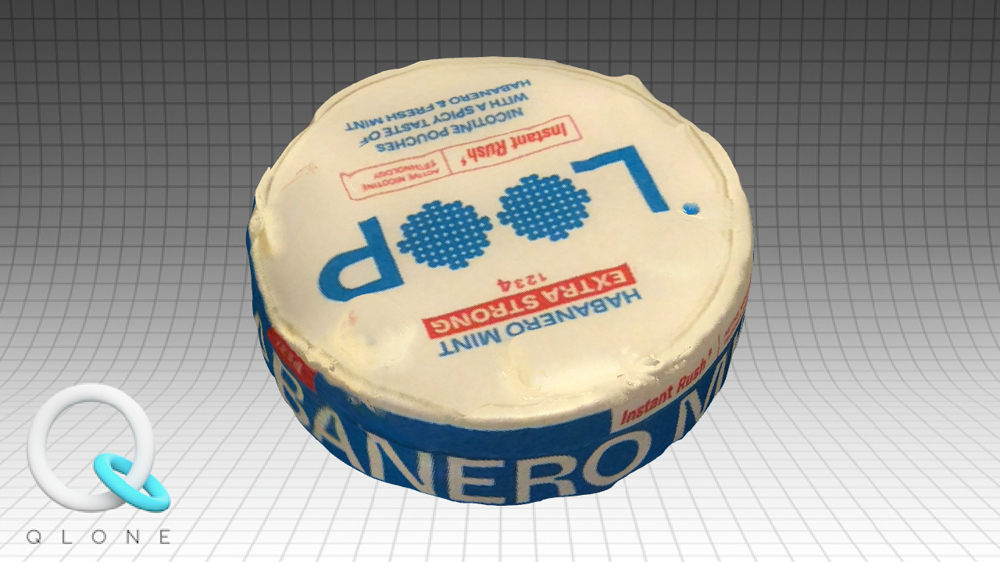